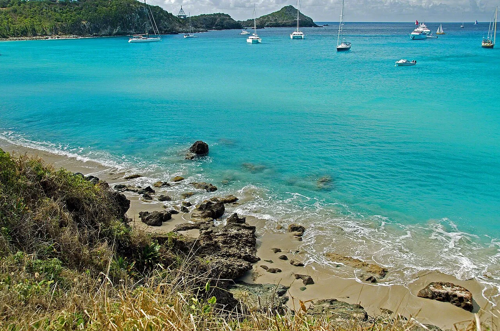

Anse de Colombier — Saint-Barthélemy
Colombier, Saint-Barthélemy · snorkeling, baignade

Longue plage de sable blanc sous le vent, à l’extrême nord-ouest de Saint-Barth, dans la réserve naturelle marine. C’est la dernière plage de l’île non desservie par une route : on y vient à pied ou en bateau. Wikipédia décrit une baie aux eaux calmes, avec des formations rocheuses et un herbier visité par des tortues vertes, idéale pour le snorkeling. La saison sèche et douce va de décembre à mai, et la mer peut monter à 29 °C, selon Saint-Barth Tourisme.
- Lieu
- Colombier, Saint-Barthélemy
- Niveau
- Variable selon les conditions
- Activités
- snorkeling, baignade
- Type d'eau
- Mer / océan
- Coordonnées
- 17.92, -62.87 (position approximative du secteur)
Dangers à connaître
- Le sentier facile part de Petite Anse (environ 20 minutes) ; celui qui part du sommet du Colombier n’est pas recommandé aux personnes âgées et aux jeunes enfants.
- Certains jours, surtout le dimanche, le mouillage est plein de bateaux : fais attention aux embarcations.
- Plage dans la réserve naturelle marine : respecte les tortues et les herbiers.
Le conseil d'Ocean Buddy
Si tu viens à pied, emporte de l’eau, un chapeau et de bonnes chaussures : il n’y a ni installation ni beaucoup d’ombre sur la plage.
Ouvrir dans Ocean Buddy Télécharger sur l'App Store
Source : Fiche Ocean Buddy · décembre 2026 · d’après Wikipédia et Saint-Barth Tourisme · à vérifier localement.